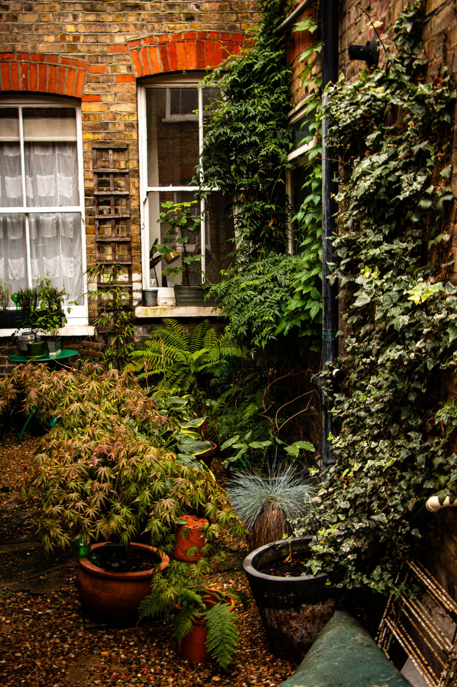
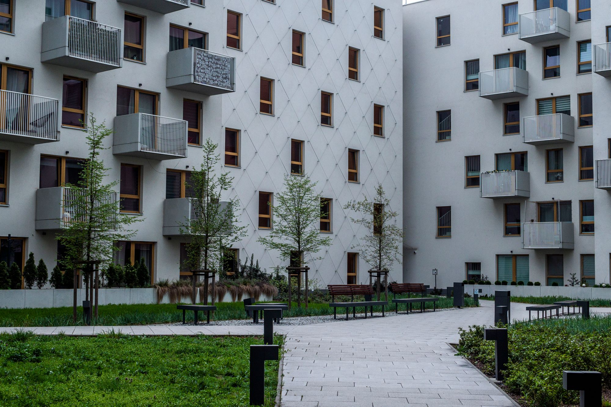
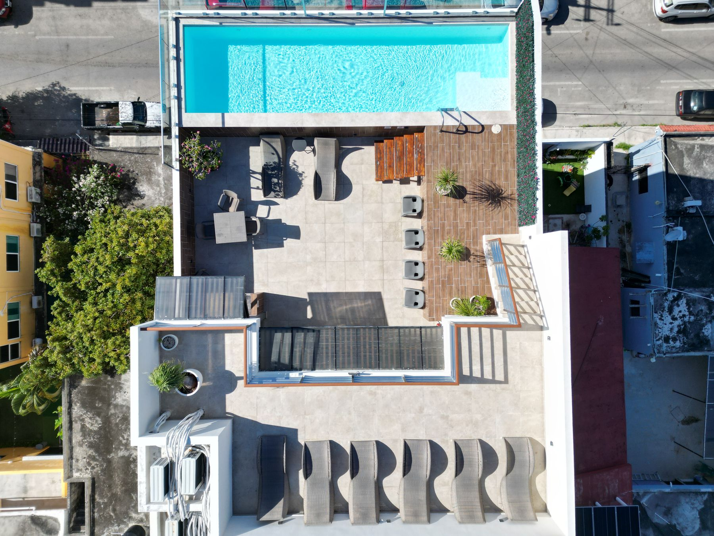
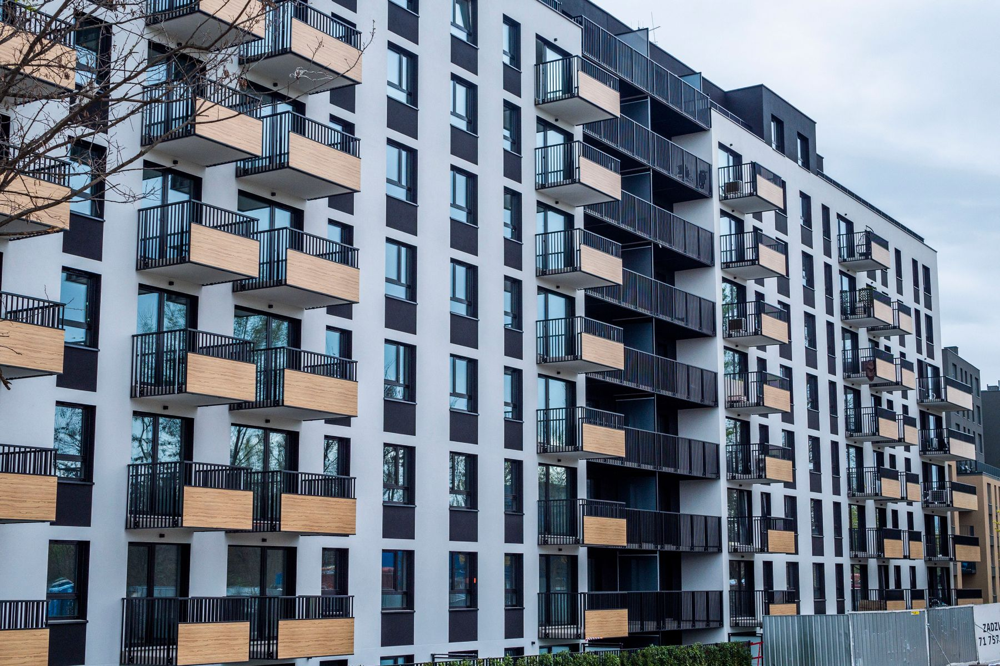
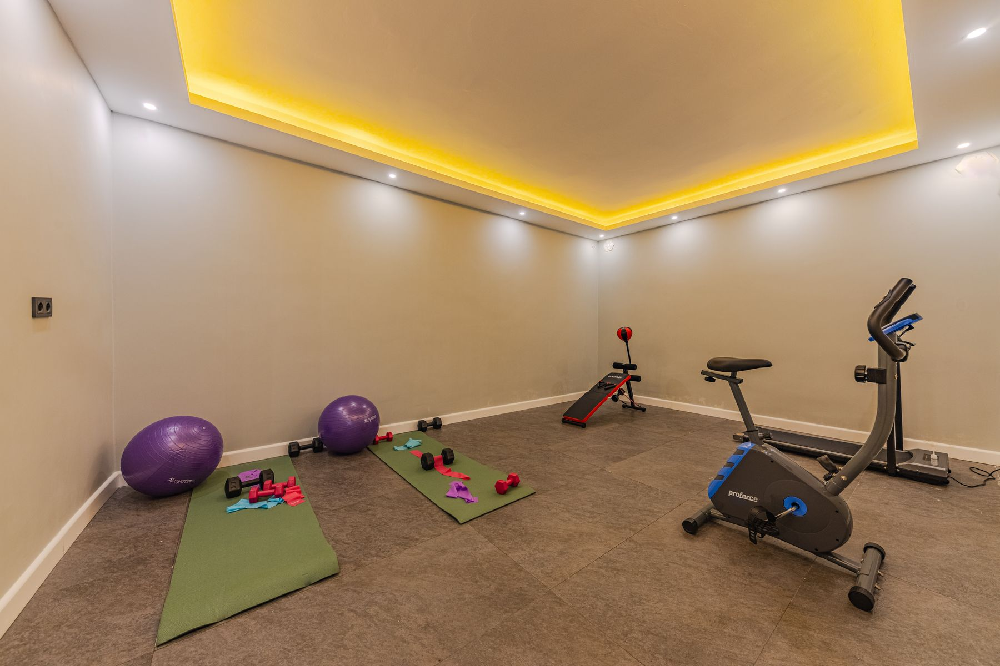
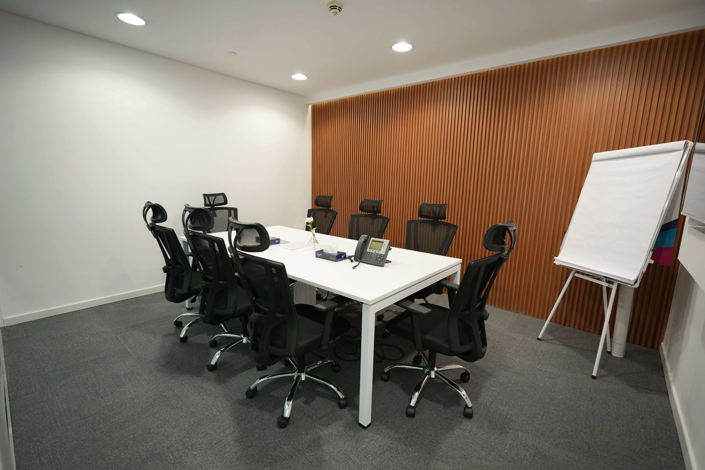
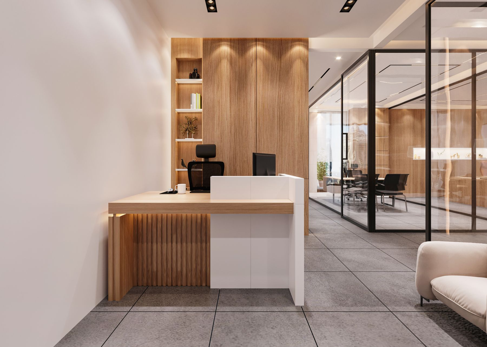

آبیِ بیانتهافیلم سینمایی · ۴۲ دقیقه باقیمانده
▶
خانه رسانه نگینباشگاه تصویر، فیلم، موسیقی و سرگرمی
تجربه اختصاصی برای ساکنان برجقصهها، مستندها و
قصهها، مستندها و
لحظههای تماشا؛ کنار هم
به کتابخانه رسانهای برج نگین پیروزی خوش آمدید. مجموعهای منتخب برای تماشای خانوادگی، کشف داستانهای تازه و یادگیری؛ در محیطی ساده، آرام و اختصاصی.
گشتوگذار در کتابخانهپیشنهاد ویژه این هفتهروایت زمینمستند · طبیعت و زندگی
ادامه تماشا
از همانجایی که دفعه قبل متوقف کردید
سیاره سبزمستند · قسمت ۲ از ۵
کارگاه خلاقیتآموزشی · ۱۸ دقیقه باقیمانده
کتابخانه منتخب
فیلم، سریال، مستند، انیمیشن و آموزش
گالری تصاویر
مجموعههای تصویری منتخب




کلیپها و برنامههای تصویری
پیشنمایش ویدئویی و مجموعههای سرگرمی

اجرای زنده و پشت صحنه
برنامهها و شوموسیقی و شنیدنیها
قفسه موسیقی و قطعات منتخب
ملودی روزموسیقی بیکلام · قطعه نمونه

شب موسیقیاجرای زنده · مجموعه منتخب کنسرت و اجراموسیقی · برنامههای زنده
کنسرت و اجراموسیقی · برنامههای زندهبرنامهها و شو
گفتگو، سرگرمی، اجرا و رویدادهای منتخب
پیشنمایش کلیپ نمونه · برای نمایش عملکرد پخشکننده
پروفایل خانوادگی
پروفایل مستقل اعضا، فهرست تماشا و پیشنهادهای متناسب با سلیقه هر نفر.
تماشای امن کودکان
ردهبندی سنی، محدودیت محتوای نامناسب و فضای انتخابشده برای کودکان.
زیرنویس و کیفیت پخش
انتخاب زبان، زیرنویس و کیفیت متناسب با نمایشگر و شبکه داخلی.
شبکه داخلی برج
طرح مرکز برای میزبانی روی شبکه محلی آماده است؛ اتصال سرور در مرحله زیرساخت انجام میشود.